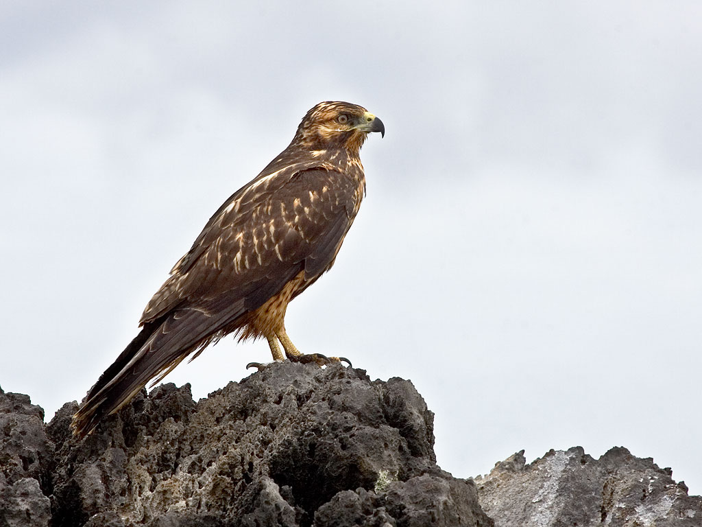

Buteo galapagoensis
The large Galapagos Hawk is a dark coloured bird with broad wings and a broad tail. They are active predators and feed on small invertabrates such as small lizards, rodents and snakes. Their width can reach 55 centimetres long with a wingspan of 120 centimetres.